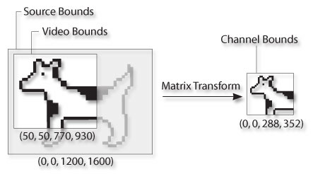

Q: I'm trying to understand the relationship between the Source, Video and Channel Bound when using the Sequence Grabber. Is there a specific way they should be set up?
A: When using QuickTime's Sequence Grabber to acquire video three rectangles are key to specifying what portion of the video should be acquired: the Source bounds, Video bounds, and Channel bounds. These bounds controll how much of the source image is going to be captured and how the captured image will be displayed. Understanding the relationship between these bounds is helpful when attempting to capturing a cropped image (in which case the Video bounds is defined as a portion of the Source bounds), and in understanding the way the captured image is scaled for display by the Sequence Grabber.
The Source bounds can be found by calling SGGetSrcVideoBounds and specifies the size of the entire active source video boundary rectangle. This is set by the Video Digitizer according to the source input format. It cannot directly be set, but can change depending on the input format.
The Video bounds defaults to the area of the Source bounds and specifies the portion of the source video image that is to be captured. This is the image that the user will actually see, although it hasn't been scaled yet. The bounds can be found and set by using SGGetVideoRect and SGSetVideoRect respectively. Some Video Digitizers may be unable to capture less than their full Source bounds.
Additionally, after detailing what portion of the source video image should be captured, the preferred size of the captured video image called the Channel bounds is specified by SGSetChannelBounds. The Channel bounds specifies the channel's display boundary rectangle.
|
Important:
SGSetChannelBounds merely allows the client to specify the preferred bounds. The actual bounds returned by the Video Digitizer might be different. If the client has strict requirements about the size and scaling of the captured video, it must be prepared to adjust the captured video as needed.
|
Figure 1 shows the relationships between the various bounds:
The Source, Video, and Channel bounds are {0, 0, 1200, 1600}, {50, 50, 770, 930}, and {0, 0, 288, 352} respectively.
|

Figure 1. Relationship between the various bounds.
|
To specify the Video and Channel bounds, choose the desired scaled source and scaled video bounds. Once those are chosen, process them as shown in Listing 1 to set the Video and Channel bounds.
|
Listing 1. Specifying the Video and Channel Bounds.
|
ComponentResult SetVideoChannelBounds(SGChannel videoChannel,
const Rect *scaledSourceBounds,
const Rect *scaledVideoBounds)
{
Rect sourceBounds;
Rect videoBounds;
Rect channelBounds;
MatrixRecord scaledSourceBoundsToSourceBounds;
ComponentResult err;
// calculate the matrix to transform the
// scaledSourceBounds to the source bounds
SGGetSrcVideoBounds(videoChannel, &sourceBounds);
RectMatrix(&scaledSourceBoundsToSourceBounds,
scaledSourceBounds, &sourceBounds);
// apply the same transform to the
// scaledVideoBounds to get the video bounds
videoBounds = *scaledVideoBounds;
TransformRect(&scaledSourceBoundsToSourceBounds, &videoBounds, 0);
err = SGSetVideoRect(videoChannel, &videoBounds);
if ((digiUnimpErr == err) || (qtParamErr == err)) {
// some video digitizers may only support capturing full frame
// or at certain specific sizes - they will return qtParamErr or
// digiUnimpErr if unable to honor the requested video bounds
err = SGSetVideoRect(videoChannel, &sourceBounds);
}
if (err) goto bail;
// the channel bounds is scaledVideoBounds offset to (0, 0)
channelBounds = *scaledVideoBounds;
OffsetRect(&channelBounds, -channelBounds.left, -channelBounds.top);
// SGSetChannelBounds merely allows the client to specify
// it's preferred bounds. The actual bounds returned by
// the vDig in the image description may be different
err = SGSetChannelBounds(videoChannel, &channelBounds);
bail:
return err;
}
|
References:
[Jul 16, 2003]
|